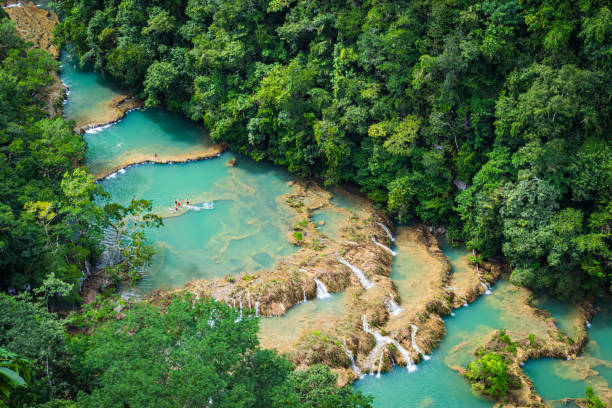
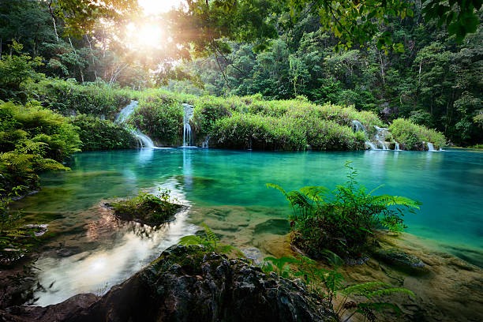
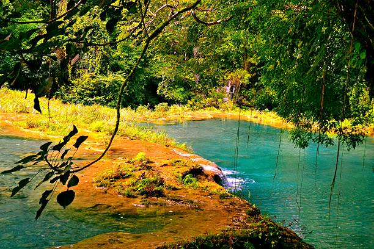
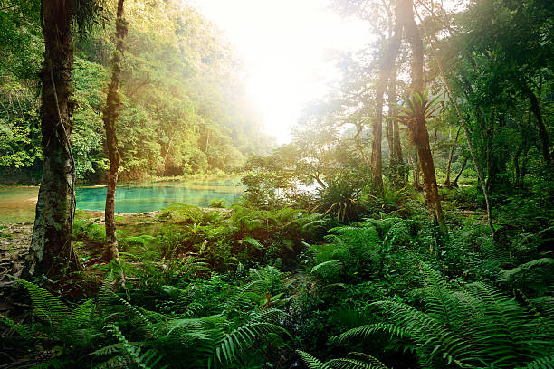
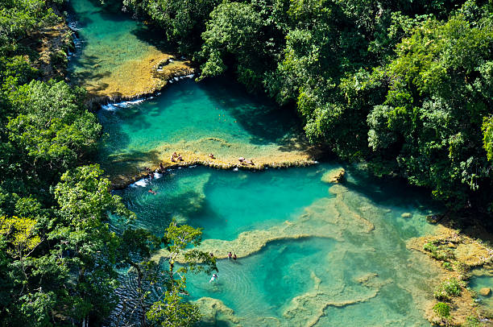
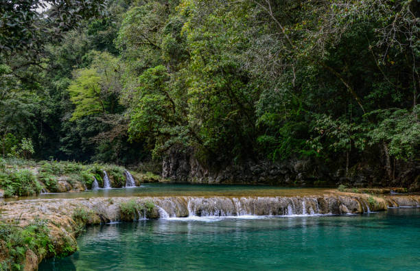

Descripción del Lugar
Semuc Champey es un monumento natural ubicado en el municipio de Lanquín, en el departamento de Alta Verapaz, Guatemala. Es famoso por su puente natural de piedra caliza de 300 metros de largo sobre el cual se forman pozas de agua turquesa cristalina alimentadas por manantiales locales, mientras por debajo fluye el río Cahabón. Es un paraíso rodeado de selva tropical, perfecto para los amantes del turismo de aventura y la naturaleza.
Galería de Imágenes






Cotizador de Presupuesto
Tabla de Itinerario de la Excursión
| Fecha | Horario | Actividad | Lugar a Visitar |
|---|---|---|---|
| Día 1 - 15 Nov | 05:00 AM - 02:00 PM | Traslado en transporte desde la capital hacia Lanquín | Ruta a Alta Verapaz |
| Día 1 - 15 Nov | 03:30 PM - 06:00 PM | Caminata ligera y exploración del pueblo de Lanquín | Pueblo de Lanquín |
| Día 2 - 16 Nov | 08:00 AM - 12:00 PM | Caminata al Mirador y baño en las pozas turquesas | Monumento Natural Semuc Champey |
| Día 2 - 16 Nov | 02:00 PM - 05:00 PM | Aventura con velas dentro de la cueva | Cuevas de K'anba |
| Día 3 - 17 Nov | 09:00 AM - 11:30 AM | Tubing (descenso en flotador) por el río | Río Cahabón |
| Día 3 - 17 Nov | 01:00 PM - 08:00 PM | Almuerzo y retorno a la ciudad | Ruta de regreso |
Otras Actividades Sugeridas
- Senderismo nocturno: Recorridos guiados por la selva para observación de fauna nocturna.
- Avistamiento de aves: Observación del Quetzal y aves exóticas locales al amanecer.
- Tour de Cacao: Visita a fincas locales para aprender el proceso artesanal del chocolate.
- Salto desde el puente: Para los más aventureros, saltos controlados hacia el río Cahabón.
- Fotografía de paisaje: Captura impresionantes vistas panorámicas desde diversos ángulos del valle.